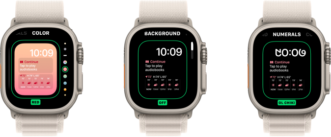

Live Sessions and Activities

A sneak peek into our visualization interface designed to enhance the user experience.
Editing Capabilites
A sneak peek into the customization of the watch face.
Enhancing the watch face experience by leveraging the Smart Stack data source to deliver personalized and relevant information at a glance.
A sneak peek into our visualization interface designed to enhance the user experience.
A sneak peek into the customization of the watch face.
The Smart Stack is a set of widgets that uses information such as the time, your location, and your activity to automatically display the most relevant widgets at the appropriate time in your day. It uses relevance based ordering to present the most relevant widgets to user, while also allowing them the freedom of ordering, adding, removing, and pinning complications to the top
The aim of this project was to design and implement a dynamic watch face leveraging the Smart Stack data source instead of the Siri data source. By using Smart Stack, the watch face displayed relevant and personalized information tailored to the user’s needs. The project also introduced live sessions and activities, providing real-time updates and seamless integration for enhanced usability. Additionally, it offered extensive customization options, allowing users to personalize their watch face with choices for colors, backgrounds, and numeral styles. This combination of practicality and personalization ensured an engaging and user-centric experience, giving users the information they needed at a glance.
4 Months